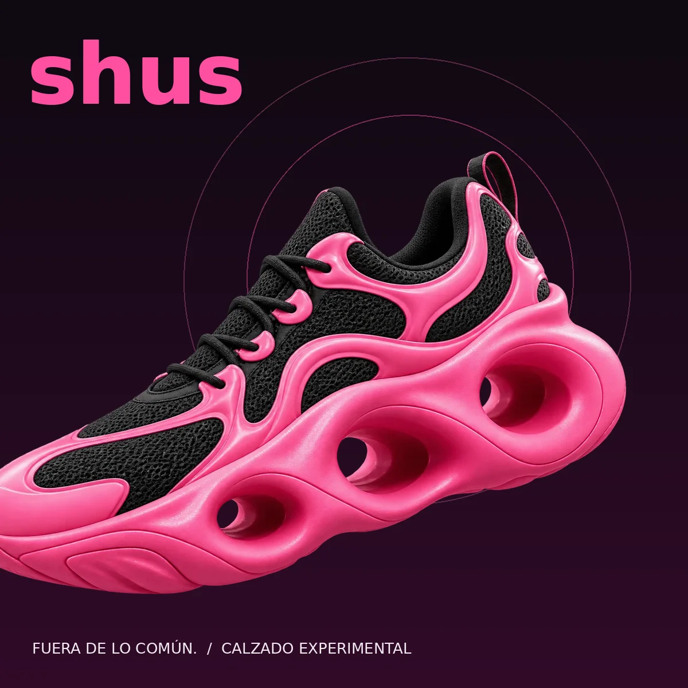
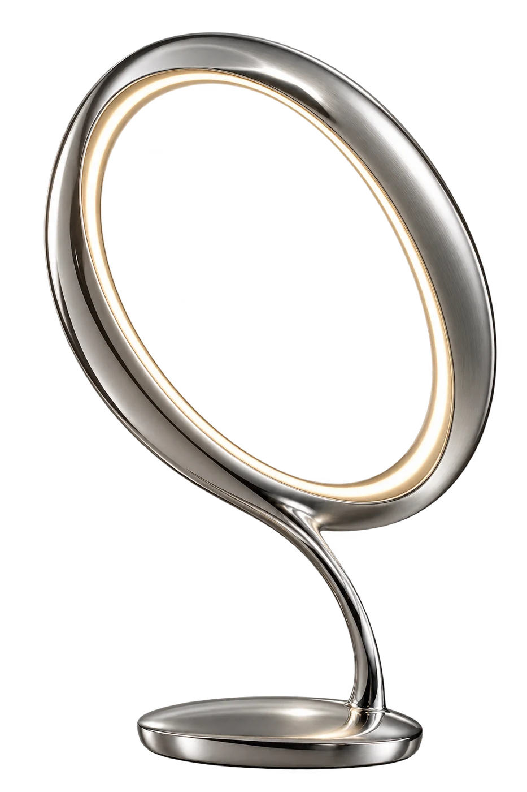
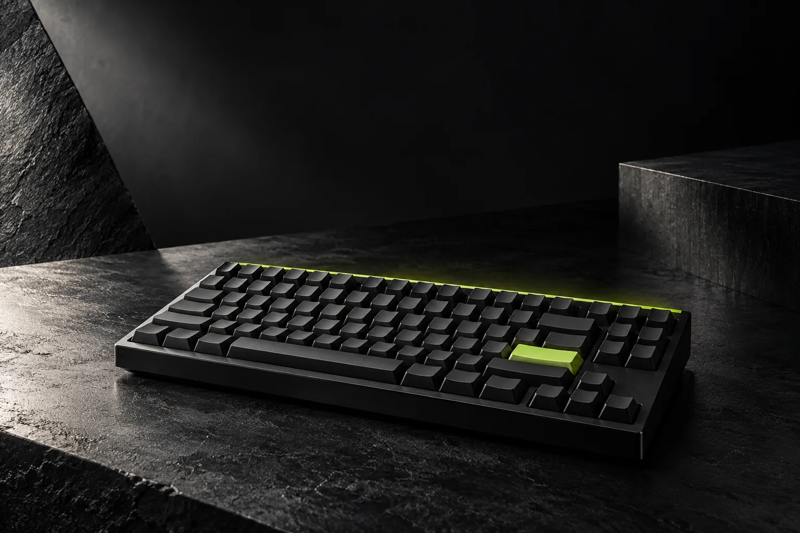
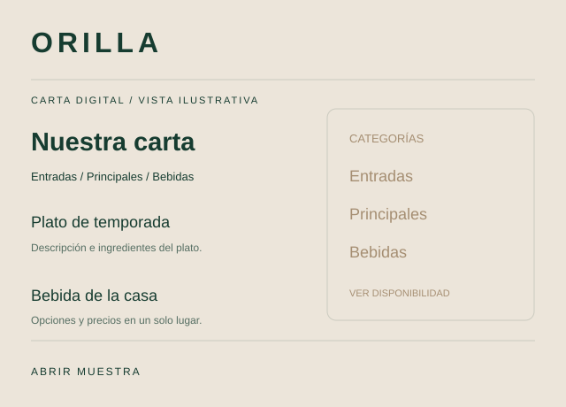
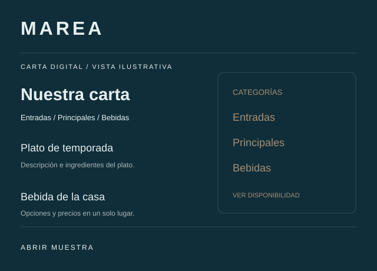
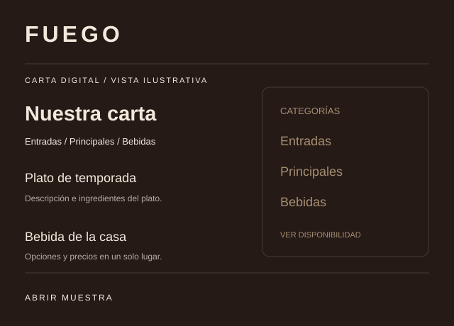

Identidad visual
Colores, tipografía y composición adaptados a tu negocio. Diseño propio, con una dirección visual consistente.
Soy Nicolás. Diseño y desarrollo webs que se sienten propias: para mostrar tu negocio y facilitar el contacto con tus clientes.
Cómo trabajo / 01
Definimos qué debe hacer tu web y construimos un recorrido claro para tus clientes.
Colores, tipografía y composición adaptados a tu negocio. Diseño propio, con una dirección visual consistente.
Servicios, productos y contacto organizados para que la visita encuentre lo que necesita.
Filtros, formularios, animaciones y conexiones que aporten utilidad. Puedes probar ejemplos abajo.
Revisamos la versión móvil y de escritorio. Acordamos contenido, plazo y alojamiento antes de publicar.
Laboratorio · pruébalo tú mismo
Elige una paleta y mira cómo cambia la página.
El diseño y la utilidad van juntos.





SHIFT.Software / herramientas propias
Herramientas en desarrollo para crear, experimentar y resolver tareas concretas.
BY FR3DO - Demo en pañales
Un plugin para capturar audio estéreo en tiempo real dentro del DAW y convertirlo en muestras WAV. Ajusta la ganancia, monitorea la entrada y revisa la forma de onda de cada toma. Después puedes guardar el archivo en una carpeta o arrastrarlo a otra pista para seguir creando.
El plugin recibe la entrada del canal del DAW, incluida una entrada de cable virtual, sin abrir el navegador. Esta primera compilación de Windows está disponible para pruebas; falta comprobarla en FL Studio. La demo web usa los permisos de captura del navegador.
Restaurantes y empresas / 04
Platos, precios y categorías desde un enlace o QR. También podemos conectar pedidos por WhatsApp y automatizar consultas con un alcance definido.



Para tu restaurante
Carta móvil, categorías, precios y enlace listo para compartir o imprimir en un QR.
Para tu empresa
Solicitudes, formularios y conexiones con herramientas. Definimos qué proceso conviene automatizar.
Precios de lanzamiento / 05
Valores en pesos chilenos. Alcance y precio final confirmados en una propuesta antes de comenzar.
Para presentar tu negocio y recibir consultas.
Desarrollo / dominio no incluido
Más espacio para servicios, trabajos y contenido.
Referencia orientativa: $500.000
Tu oferta organizada para explorar desde el celular.
Alcance básico, sin pagos en línea
Todos los planes incluyen una ronda de ajustes. Contenido e imágenes los aporta el cliente. Dominio, hosting, mantención, panel editable y servicios externos se cotizan aparte; no hay una mensualidad incluida.
Para la web corporativa usamos $500.000 como referencia orientativa dentro de los rangos publicados por WebMaule y Puro Konzept, revisados en octubre de 2026. $250.000 equivale a la mitad de esa referencia. No es un antiguo precio propio ni un promedio estadístico del mercado. Las prestaciones y costos de alojamiento pueden diferir. La web de una página ($100.000) y la carta QR ($70.000) tienen precios de lanzamiento propios, sin descuento comparativo.
Automatizaciones, pagos o sistemas a medida: propuesta según funciones, herramientas y costos de operación.
Sin formularios largos
Prepara un mensaje breve, revísalo y ábrelo en WhatsApp. Tú decides cuándo enviarlo.